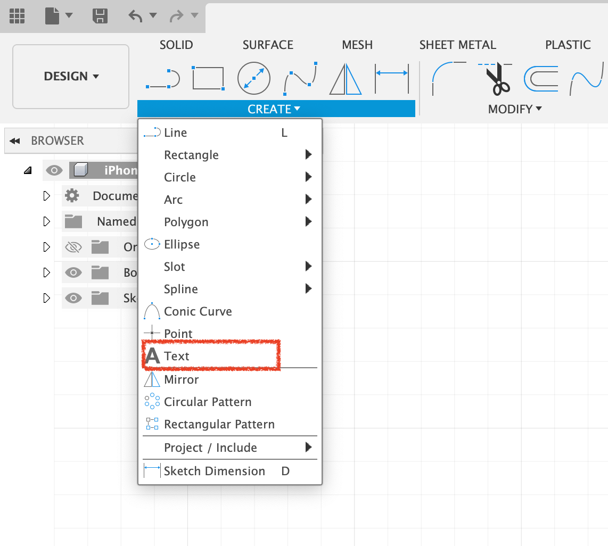
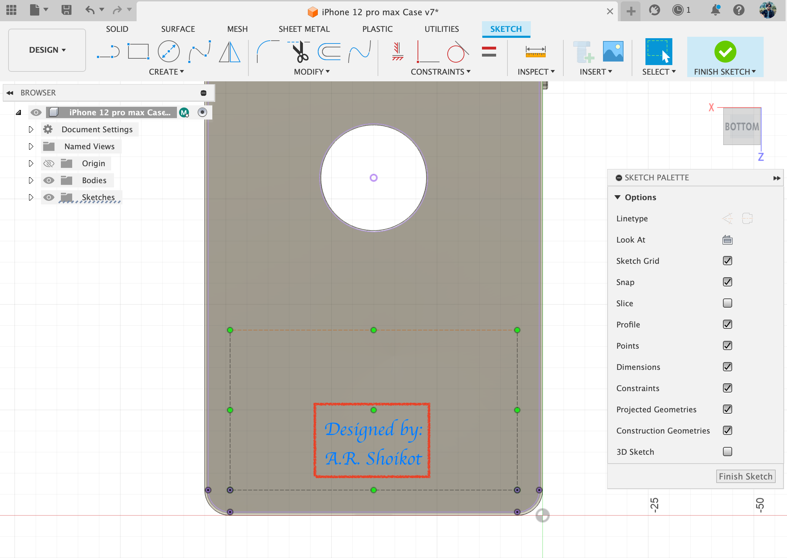
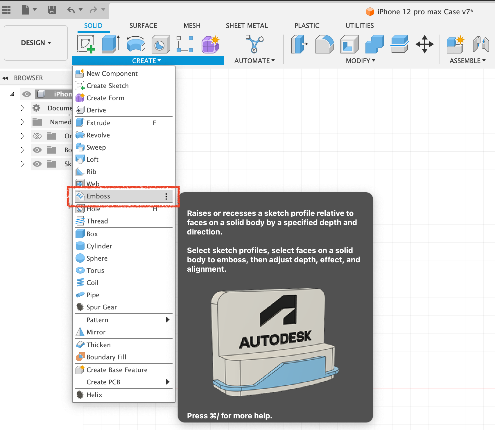
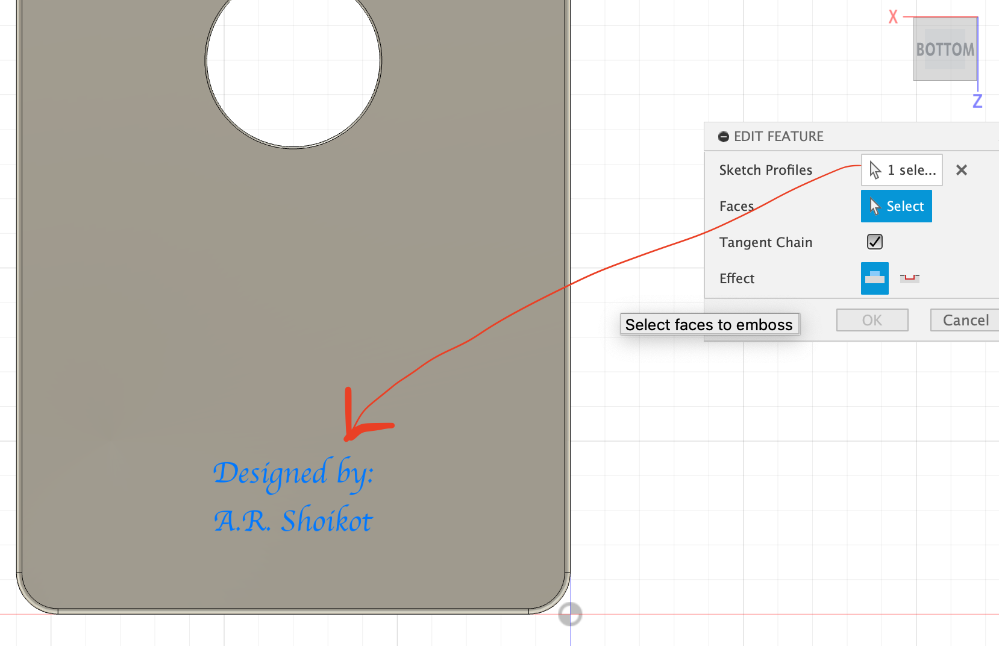
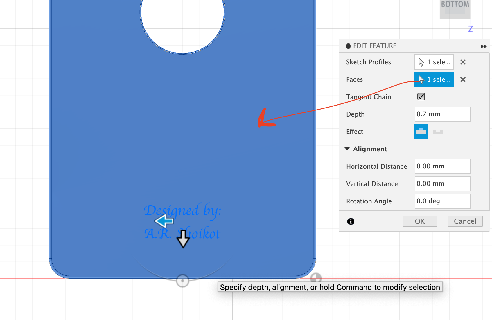
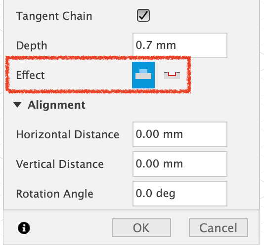
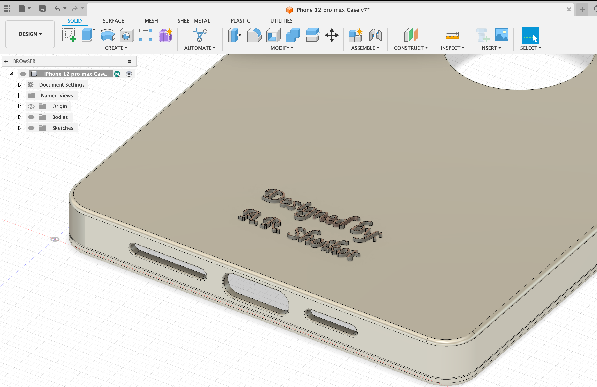

Creating a protective case for iPhone 12 pro max
We are going to create fusion 360 software to create a protective case for iPhone 12 pro max. The process is shown step by step down below.
Images:
Creating Text on iPhone 12 pro max Case
- Choose the surface where we want our text to be.
- Then create sketch on the surface.
- While in the sketch interface select “Text” to type text
- When the text is done, click on “Finish Sketch”
- Chose “Emboss” to extrude the text on our desired surface
- Chose the Text on the surface as your “Sketch Profile”
- And choose The Surface where the Embossed text is going to be for “Faces”
- Make sure the 1st icon is selected on “Effect” to Emboss. If you want your text to be deboss (Cut out on the surface) you can choose 2nd cut out icon.
Image 1: Choose the surface where we want our text to be & create sketch on the surface
mage 2: While in the sketch interface select “Text” to type text. When the text is done, click on “Finish Sketch”
Image 3: When the text is done, click on “Finish Sketch”
Image 4: Chose “Emboss” to extrude the text on our desired surface
Image 5: Chose the Text on the surface as your “Sketch Profile”
Image 6: And choose The Surface where the Embossed text is going to be for “Faces”
Image 7: Make sure the 1st icon is selected on “Effect” to Emboss. If you want your text to be deboss (Cut out on the surface) you can choose 2nd cut out icon. You can change the “Depth” parameter according to your likings
Image 8: The result
Image 11: : Coloring the Buttons with “Appearance” tool.